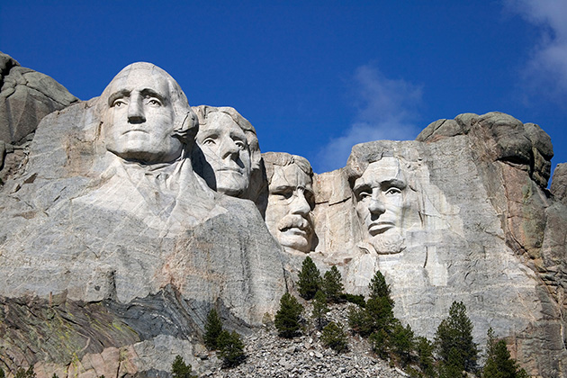
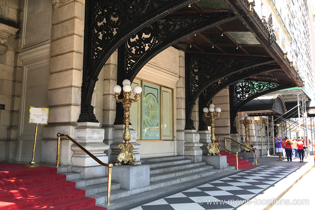
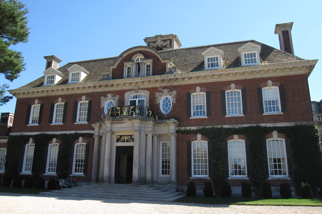

North By Northwest
Main Content

Alfred Hitchcock hits peak lightweight form with the greatest of all comedy thrillers. Cary Grant is perfectly cast as Roger O Thornhill, an advertising exec working in the now demolished CIT Building, which stood at 650 Madison Avenue in New York (Hitchcock makes his cameo appearance under the credits here, just missing the bus).

Thornhill is mistakenly abducted, in place of the mysterious ‘Mr Kaplan’, from the Plaza Hotel, Fifth Avenue at 59th Street. The 19-story landmark was built in 1907 and the list of jawdropping features begins with the 1,650 crystal chandeliers. The first nightly rate when the hotel opened? $2.50. Today it’s a little more.
Other movies featuring the Plaza include Arthur, Crocodile Dundee, Barefoot In The Park, Network, Sleepless In Seattle, Home Alone II, The Cotton Club, Funny Girl, The Great Gatsby, King of New York, Plaza Suite (naturally) and The Way We Were.

The house of silkily villainous Phillip Vandamm (James Mason), supposedly ‘169 Baywood, Glen Cove’, where Thornhill is force-fed bourbon by creepy Leonard (Martin Landau), is the redbrick mansion at Old Westbury Gardens, 71 Old Westbury Road, the Phipps Estate, a few miles south of the real Glen Cove, Long Island. The estate – which is open to visitors – can be reached from Westbury Station, on the Long Island Railroad, from New York’s Pennsylvania Station. Another screen favourite, the estate is also seen in Ridley Scott's 2007 epic American Gangster, Love Story, Cruel Intentions, Hindi drama Kal Ho Naa Ho, and Wolf, among others.
Thornhill follows a lead to the United Nations Headquarters, First Avenue between 42nd and 48th Streets, where he’s framed for murder. You can, more safely, book a United Nations Guided Tour.
Thornhill escapes on the Twentieth Century from Grand Central Station, East 42nd Street at Park Avenue, and meets the compliant Eve Kendall (Eva Marie Saint), who helps him evade Redcaps when they arrive at Chicago.
The old LaSalle Street Station, seen in the film, which stood at 414 South LaSalle Street between West Van Buren Street and West Harrison Street, was replaced in the early Eighties by a bland, new modern structure, incorporating office space.
In one of cinema’s most famous scenes, Thornhill goes to meet the strange ‘Mr Kaplan’ by taking the Greyhound bus to Indianapolis and getting off at the ‘Prairie Stop on Route 41’, where he’s attacked by the crop-dusting plane. Far from ‘Indiana’, the crop fields are actually at Wasco, near Bakersfield on Route 99, in the California desert 80 miles north of Los Angeles. A favourite road of Hitchcock’s – it links Hollywood to the vineyards of Northern California – it’s the same stretch of road on which James Dean met his fate.
Thornhill, though, survives and returns to Chicago in dogged pursuit of Kaplan at what was the legendary Omni Ambassador East Hotel in the city's Gold Coast district. In 2010, the famed establishment was sold to hotelier Ian Schrager, who completely remodelled it as the Public Chicago, 1301 North State Parkway at East Goethe Street.
Built in 1926, to mirror the 1919 Ambassador West over North State Street at 1300, the Ambassador East, and its luxurious Pump Room restaurant (which remains), was a personal favourite of Hitchcock’s. The hotel also featured in Tony Bill’s My Bodyguard in 1980.
Built in the studio in Hollywood were Vandamm’s futuristic Frank Lloyd Wright-style home and a section of Mount Rushmore for the famous climax – the authorities weren’t going to allow any disrespect to the dead presidents (at one point, Hitchcock wanted Thornhill to be given away by a sneeze while hidden inside a huge presidential nostril).
The real Mount Rushmore, with its four 60-feet-tall faces of US presidents Washington, Jefferson, Roosevelt and Lincoln, sculpted between 1927 and 1941, can be visited in the Black Hills National Forest, Route 385, about 35 miles southeast of Rapid City, South Dakota. I hope you're more impressed than the grumpy Woody (Bruce Dern) in Alexander Payne's 2013 Nebraska – “Doesn’t look finished to me.”
Visit Info
Visit The Film Locations
New York
Flights: John F Kennedy International Airport, New York, NY 11430 (tel: 718.244.4444)
Visit: New York
Travel around: MTA
Stay at: the Plaza Hotel, 768 5th Avenue, New York, NY 10019 (tel: 212.759.3000)
Take: the United Nations Guided Tour, First Avenue between 42nd and 48th Streets
Visit: Old Westbury Gardens, 71 Old Westbury Road, Westbury, NY 11590 (tel: 516.333.0048)
Illinois | Chicago
Visit: Chicago
Flights: O’Hare International Airport, 10000 West O'Hare Ave, Chicago, IL 60666 (tel: 800.832.6352)
Travel around: Chicago Transit Authority
Stay at: the Public Chicago, 1301 North State Parkway, Chicago, IL 60610 (tel: 312.787.3700)
South Dakota
Visit: South Dakota
Visit: Mount Rushmore, 13000 SD-244, Keystone, SD 57751 (tel: 605.574.2523)
Visit: Rapid City
Visit: Black Hills National Forest
California
Visit: California